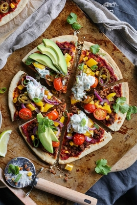

Mexican Pizza

Description
This meal is the perfect combination of two classics: tacos and pizza.
It's super quick and wonderfully filling, with just the right kick of spice.
The cilantro yogurt mayo sounds like a crazy idea,
but it's the best creamy and delicious topping on this comforting pizza.
Ingredients
Pizza
- 1 tsp (5 mL) vegetable oil
- 3 cloves garlic, crushed
- 1 cup (113 g) soy veggie ground
- 2 Tbsp (17 g) Mexican spice mix
- 2 Tbsp (30 mL) water
- 2 medium ready-made pizza crusts
- 5 Tbsp (82 g) tomato paste
- 1 bell pepper, diced
- 1 small red onion, thinly sliced
- ⅓ cup (55 g) canned corn
- ⅓ cup (55 g) canned corn
- ¼⅓ cup (55 g) canned corn
- 1 avocado, sliced
- 1 stalk green onion, sliced
Cilantro yogurt mayo
- ¼ cup (60 mL) unsweetened soy yogurt
- 2 Tbsp (30 mL) vegan mayonnaise
- 2 Tbsp (2 g) fresh cilantro
- ¼ tsp salt
Steps
- Add the oil to a small pan on high heat. When hot, add the garlic and cook for 2 minutes.
- Then add the veggie ground, spice mix, and water. Cook for another 2 minutes.
- Preheat the oven to 390°F (200°C). Lightly brush the top of the pizza crusts with some (optional) oil, then spread over the tomato paste.
- Divide the veggie ground mixture over the pizzas, and add the bell pepper, onion, corn, jalapeños, and tomatoes. Bake in the centre rack of the oven for 12 - 15 minutes, or until the crust is lightly golden.
- Meanwhile, make cilantro sauce by mixing the ingredients in a small bowl.
- When the pizza is done, top it with dollops of the yogurt sauce, some sliced avocado, and sliced green onions. Enjoy!
All recipes and pictures are from Pick Up Limes site.